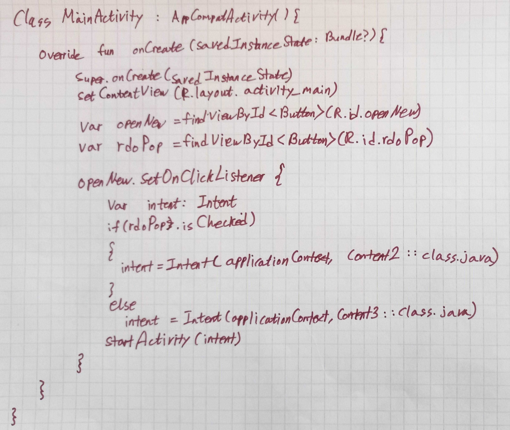

Kotlin으로 만든 안드로이드앱입니다.
기능별로 정리를 해보았습니다. 각 버튼을 눌러확인하세요.
인텐트 구현 포트폴리오
Intent기능으로 만든 안드로이드앱입니다.
<기본 인텐트 + 라디오버튼 기능>

<버튼을 ScrollView에 추가>

<액티비티를 추가>

안드로이드 앱 코틀린 기본틀 개념:
자바와 같이 메인이 실행되는 시스템이다. 이 담당을 안드로이드에서는 MainActivity가 담당하고 있다. onCreate에 레이아웃에 만든 GUI에 해당하는 모든 값(예: 버튼, 텍스트뷰)들을 변수선언을 해주고 아래setOnClickListener에서 각 일어나는 액티비티들을 기본 자바에서 배웠던 조건문 반복문같은것을 코틀린 언어에 응용하여 내가 원하는 기능으로 설정을 해주면 된다.
